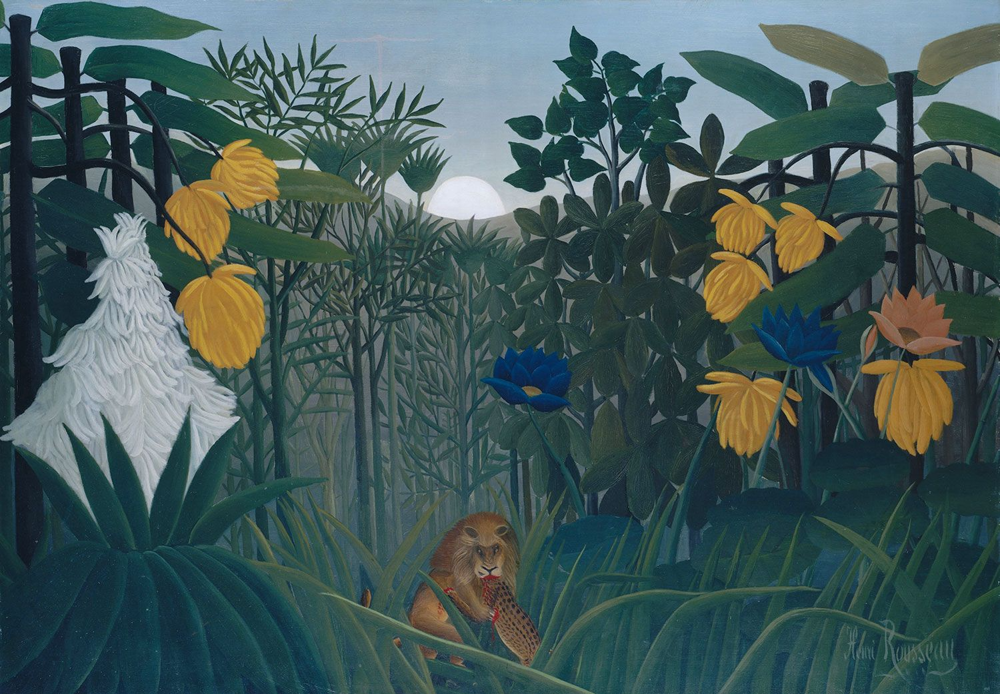

我的假期
Published:
简单回顾我的几个假期
简单回顾我的几个假期
大一寒假,突如其来的疫情,宅在家里学数分二和几何代数(你能想到吗,数分一的老师留寒假作业)
大一暑假,封在学校里,线上支教,复习延期的期末考
大二寒假,哥哥没回去,我学TS和React,为科研做一点点准备
大二暑假,没回家,做Linux的大作业(写一个简易的Bash)和准备计算机系统概论的期末考,还有国创项目
大三寒假,为三月的VIS投稿做系统,被SVG折腾
大三暑假,没回家,为九月的CHI学混合现实开发的技术栈
大四? 没有大四了,那就是博0了
前几天最后一门课出分,查到分的瞬间,我情不自禁的就哭起来了
这三年,在每一个学分上抠来抠去,期间的痛苦失落,迷茫无助一时涌上心头
我一个缺心眼的木头人,在凡是能够涉及到成绩和保研综素的地方,都塞了心眼,我不敢大意一点,大意一点就被冲刷到后面去了,我活成了连室友都佩服、连自己都厌恶的精明人.我在保研直博这条路上押的注太大了,我几乎没有别的退路,只能背水决战.比起那些大城市的同学,比起那些竞赛中走出来的选手,我已是落后了太多,何况我大一的时候昏沉不知方向.
老朋友要来杭,叫我推荐些美食打卡点,我才意思到我这大学三年活成了什么样子,只能道出在学校周边请学长吃过两次的肉本家和请学长吃过两次的南山南——四次都是在迷茫的时候和学长组的学长谈心交流.我的大学生活终归是枯燥乏味,没有过安逸舒畅、可以纵情出游爬山看海、或是听音乐剧相声剧、或是留一个下午画画速写、亦或三五朋友小聚夜聊达旦的假期.不曾有,也不敢有.
甚至,我好久没有宅在图书馆看书了呐…今天去图书馆借书才有一种恍然若梦的感觉涌起来
三年,说溜走就溜走了
那些未见的人,未见的景,未读的书,未来得及想起的故事
我给你们道一句对不起啊,三年前的孩子,倏得长大了一点点.
